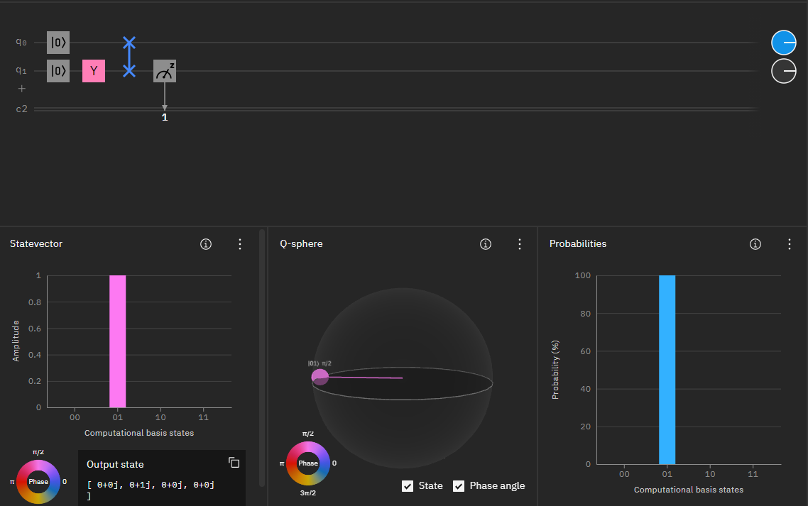

Zamiana wartości stanów qubitów - SWAP i CS SWAP
Bramki SWAP i CS SWAP służą do zamiany stanów dwóch qubitów. Bramka SWAP, którą widzisz poniżej, zamienia stan górnego qubita na stan dolnego i na odwrót.

O to przykład:

Tutaj górny qubit jest w stanie  , qubit dolny ma stan
, qubit dolny ma stan  . Po użyciu bramki SWAP, te stany się zamienią ze sobą miejscami. Zobazc niżej:
. Po użyciu bramki SWAP, te stany się zamienią ze sobą miejscami. Zobazc niżej:

Bramka CS SWAP działa bardzo podobnie jak bramka SWAP, tylko że ona zamienia wartości dwóch docelowych qubitów, tylko wtedy, kiedy qubit kontrolny ma stan Oto przykład:

Jeżeli pierwszy qubit jest równy , to nic się nie dzieje.

Natomiast jeśli qubit kontrolny będzie miał stan to qubity docelowe zamienią się stanami.